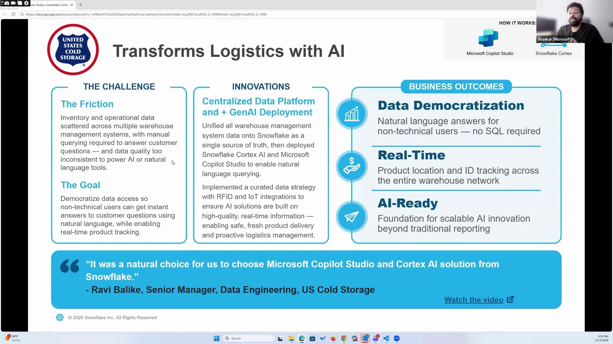
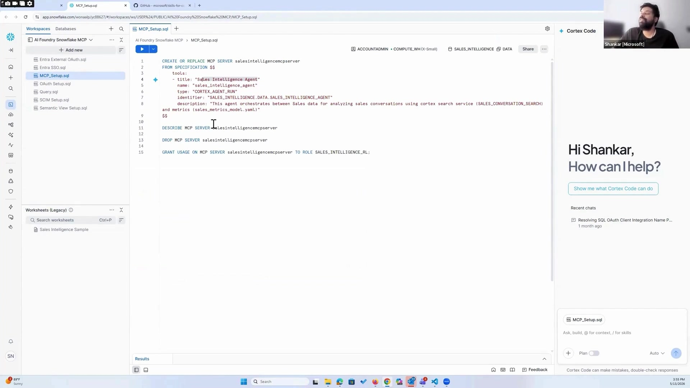
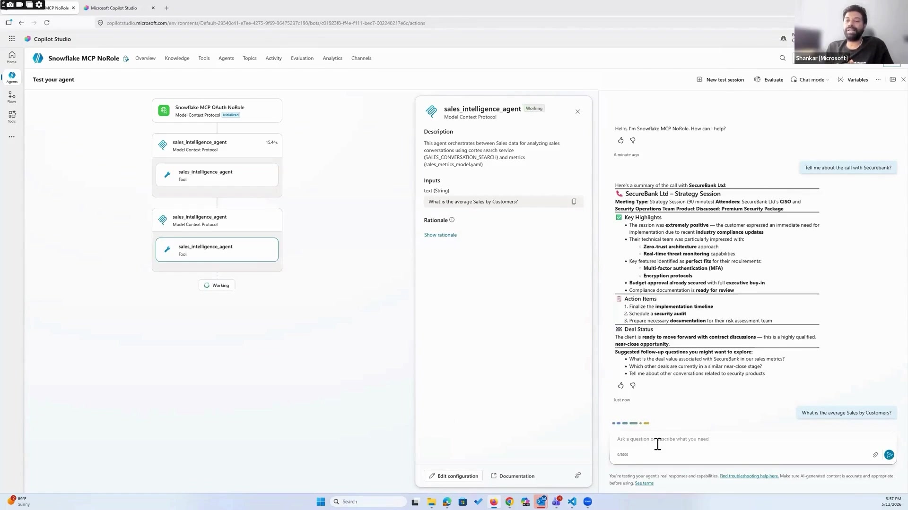
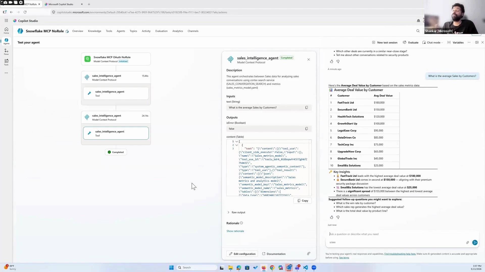

ODSP2233 官方课件实拍 · 02:40 客户案例
United States Cold Storage：融合多仓台账与冷链传感数据的零 SQL 转型
汇聚分散仓库系统并接入射频识别与物联网实时数据流，通过 Copilot Studio 编排 Cortex 智能体直推 Teams。数据工程高级经理 Ravi Balike 评价两者是“顺理成章的天然搭档” [1][4]。
一线业务人员每天驻留在 Microsoft 365 与 Teams 沟通决策，而决定供应链、库存与营收的核心企业数据往往沉淀在 Snowflake 数仓深处 [1][2]。在 Microsoft Ignite 2026 合作伙伴专场 ODSP2233 中，微软 Snowflake 独立软件供应商合作团队负责人 Shankar Narayanan 拆解了全新托管式连接架构：借助模型上下文协议服务器将 Snowflake Cortex 智能体直接挂载进 Copilot Studio，让非技术员工在不绕过数仓角色安全边界的前提下，用自然语言同时查清结构化指标与非结构化通话纪要 [1][2]。
$180K）与长尾 SmallBiz（$25K）价差达 $155,000 [1]
01 / Bridging Workplace and Data Cloud
企业落地面临一道普遍的物理割裂：销售、运营与客服团队全天在 Microsoft Teams 与网页工作台中处理业务，而高价值库存流水、交易台账与客户录音却集中在 Snowflake 数据云内 [1][2]。过去若要回答一线人员的临时追问，数据团队要么手工编写查询脚本，要么维护成百上千张静态报表；员工往往需要漫长等待整张大表加载完毕，才能看清一个具体的业务数字 [1]。
Shankar Narayanan 在开场明确了双方消除这一断层的三条技术主线 [1]。第一条主线是 Copilot Studio 原生协议直连：平台现已支持通过托管式模型上下文协议（Model Context Protocol）服务器直接挂载 Snowflake Cortex 智能体，将多智能体编排成果一键发布至 Teams 与各类业务前端 [1][3]。第二条主线是 Microsoft 365 Teams 沉浸式交互，让一线员工像给同事发消息一样用日常语言向数仓提问，同步覆盖结构化指标表与非结构化文本 [1][2]。
第三条主线则是双向前沿模型底座 [1]。研发团队既可以在 Microsoft Foundry 中调用前沿大模型构建由 Cortex 数据驱动的复杂智能体，也可以反过来在 Snowflake Cortex 内部直接调用 Azure OpenAI 服务就近完成推理，按场景灵活择优 [1]。下方交互导览台汇总了 ODSP2233 官方 7 分钟实录点播流、官方讲稿直链与五个核心演示章节的逐秒索引 [1]：
按时间轴切换三大跨生态支柱、冷链物流客户案例、声明式协议配置、双模态实机联调与开源配置技能包，支持页内加载官方播放器。
02 / Customer Proof: US Cold Storage
在切入代码配置前，Shankar 分享了北美温控仓储与冷链物流代表企业 United States Cold Storage 的生产落地路径 [1][4]。对于冷链物流而言，货品新鲜度与准时交付高度依赖实时库内状态；然而该企业此前的库存与运营数据分散在多套异构仓库管理系统中，不仅跨仓查询高度依赖人工提取，底层数据口径也参差不齐，难以直接支撑自然语言问答 [1][4]。

汇聚分散仓库系统并接入射频识别与物联网实时数据流，通过 Copilot Studio 编排 Cortex 智能体直推 Teams。数据工程高级经理 Ravi Balike 评价两者是“顺理成章的天然搭档” [1][4]。
如上方官方课件实拍所示，团队分两步重构了数据链路 [1][4]。底层先将全网仓库管理系统汇聚至 Snowflake 建立单一事实源，同步引入经过治理的射频识别标签与物联网温控传感实时流，确保上层推理建立在鲜活且一致的高质量数据之上 [1][4]。上层则在数仓内构建领域专属的 Cortex 智能体，交由 Copilot Studio 统一编排工作流并直接部署进 Microsoft Teams [1][4]。
改造上线后，分布各地的非技术客服与调度员不再需要打开厚重的商业智能报表、等待全量数据渲染，也无需请求工程师代写查询语句 [1]。员工只需在 Teams 聊天窗内像询问同事一样输入自然语言，即可即时获知全网仓库内的货品精确位置与编号追踪状态，把原本滞后的报表查阅升级为主动的冷链履约管理 [1][4]。
03 / Six-Step Workflow & Declarative MCP Setup
把数仓智能体安全接入日常办公流，到底需要多少胶水代码？答案是零自建中间件 [1][3]。官方架构图与实机工作区清晰界定了从底层数据准备到跨源协同的六步标准工作流 [1]：
针对销售指标或库存台账等结构化表，编写语义模型文件（如 sales_metrics_model.yaml），为自然语言转查询语句锚定准确的指标口径与表关联逻辑 [1][3]。
针对客服通话录音转写文本、合同与文档等非结构化语料建立检索服务（如 SALES_CONVERSATION_SEARCH），支持高召回语义检索 [1][3]。
借助数仓内置编程助手组装顶层智能体（如 SALES_INTELLIGENCE_AGENT），由其根据提问意图自主裁决何时调用结构化分析、何时调用文本检索 [1][3]。
在数仓工作区运行声明式语句创建协议服务器，将该智能体注册为标准运行工具，并向指定业务角色授予最小使用权限 [1][3]。
在 Copilot Studio 工具面板填入协议服务器地址与外部身份认证参数，无需搬运底层数据即可完成安全握手 [1][3]。
将数仓返回的可信洞察与 Microsoft 365 邮件、日历及其他业务连接器串联编排，统一发布至 Teams 或企业门户 [1][2]。
进入 Snowflake 实机环境后，Shankar 展示了在 SALES_INTELLIGENCE.DATA 模式下用内置编程助手辅助搭建的 SALES_INTELLIGENCE_AGENT：其下同时挂载了指向 SALES_INTELLIGENCE_WH 计算仓库的语义模型 SALES_METRICS_MODEL，以及承载销售代表与客户历史通话纪要的检索服务 SALES_CONVERSATION_SEARCH [1]。紧接着，他在工作区打开配置脚本，演示如何用原生声明语句将该智能体直接转化为外部可调用的协议端点 [1][3]：
CREATE OR REPLACE MCP SERVER salesintelligencemcpserver
FROM SPECIFICATION $$
tools:
- title: "Sales Intelligence Agent"
name: "sales_intelligence_agent"
type: "CORTEX_AGENT_RUN"
identifier: "SALES_INTELLIGENCE.DATA.SALES_INTELLIGENCE_AGENT"
description: "This agent orchestrates between Sales data for analyzing sales conversations using cortex search service (SALES_CONVERSATION_SEARCH) and metrics (sales_metrics_model.yaml)"
$$;
GRANT USAGE ON MCP SERVER salesintelligencemcpserver TO ROLE SALES_INTELLIGENCE_RL;
工作区左侧目录完整配套 Entra External OAuth、Entra SSO、SCIM 与语义视图脚本；右侧将 CORTEX_AGENT_RUN 封装为标准工具并严格授权给 SALES_INTELLIGENCE_RL 角色 [1][3]。
这段配置体现了“安全不下放、数据不出域”的架构精髓 [1][3]。左侧目录树中并列着外部身份认证、单点登录与跨域身份管理脚本；底部的赋权语句则确保即便智能体被发布到全公司聊天群，每一次协议调用依然受限于数仓原生角色体系与行列级安全控制，绝不会因引入低代码前端而敞开越权后门 [1][2][3]。
04 / Live Demo: Unstructured & Structured Turns
切回 Copilot Studio 环境后，添加好的模型上下文协议工具已自动识别出远端的 sales_intelligence_agent [1]。Shankar 清空测试窗，在同一个对话上下文中连续发起两轮形态截然不同的业务追问，现场检验跨模态路由与数据返回质量 [1]。
第一轮聚焦非结构化客户语音纪要，输入提问：‘Tell me about the call with Securebank?’（告诉我与 SecureBank 那通电话聊了什么？） [1]。Copilot Studio 自动唤醒协议工具并将文本透传至 Snowflake；远端智能体识别出这是对话内容查询，随即调动 SALES_CONVERSATION_SEARCH 检索原始记录，全程耗时 15.44 秒（isError: false）即返回结构清晰的商机简报 [1]。

精准还原与 SecureBank 首席信息安全官团队围绕高级安全套件展开的 90 分钟深潜会议：标注零信任、多因素认证与加密协议契合点，确认预算已获批并列出 3 项跟进任务 [1]。

自动调用 Sales_metrics_model 生成数仓查询，输出 10 家客户平均客单价榜单（榜首 FastTrack $180K，SecureBank $150K 位居第二），并主动关联上一轮安全套件洽谈背景 [1]。
简报点明这是一场与 SecureBank 首席信息安全官及安全运营团队召开的 90 分钟策略深潜会议，核心聚焦近期行业合规更新驱动的 Premium Security Package 采购需求 [1]。客户技术团队高度认可零信任架构、实时威胁监测、多因素认证与加密协议，且项目预算已获高管层批准 [1]。与此同时，智能体自动梳理出推进合同签署前的 3 项明确待办（敲定实施时间表、排期安全审计、准备风险评估合规文档），并在底部推荐了查询关联交易额等追问建议 [1]。
紧接着，Shankar 在同一窗口切换到结构化指标分析，追问：‘What is the average Sales by Customers?’（各客户的平均销售额是多少？） [1]。这一次，远端智能体自动转向语义模型 Sales_metrics_model（对应 sales_metrics_model.yaml），将自然语言翻译为标准查询语句在数仓内执行，耗时 24.14 秒返回完整的十家客户平均客单价排行榜 [1]：
$180,000，刚刚完成 90 分钟安全深潜会议的 SecureBank Ltd 以 $150,000 紧随其后，长尾 SmallBiz Solutions 为 $25,000，首尾客单价跨度达 7.2 倍（绝对价差 $155,000）[1]。更值得留意的工程细节在于跨轮次上下文互证：智能体在总结结构化数据时，不仅精准算出最高与最低客单价之间存在 $155,000 价差（约 7.2 倍跨度），还主动指出位列第二的 SecureBank Ltd（$150,000）恰好印证了上一轮非结构化通话纪要中探讨的高价值高级安全套件商机，随后进一步给出按客户查赢单率、按销售代表查均单产值等深化分析入口 [1]。
05 / AI-Assisted YAML Skills & Rollout Playbook
除了面向业务构建者的可视化拖拽画布，Shankar 在收尾阶段专门展示了面向专业工程团队的代码化提效利器——微软官方开源仓库 microsoft/skills-for-copilot-studio（演示版本 v1.0.11，采用 MIT 许可协议开源）[1][5]。
该技能包允许研发人员将 Copilot Studio 智能体直接表示为结构化的 YAML 定义文件，配套提供模式校验器（Schema Validation）、标准模板库、评测集（evals）以及推送与克隆脚本 [1][5]。在实际工程交付中，开发者可以左手调用 Snowflake Cortex Code（CoCo） 快速编写数仓侧语义模型、角色授权与协议注册脚本，右手结合 GitHub Copilot 或 Claude Code 调用该开源技能直接生成并校验 Copilot Studio 工作流配置，把跨栈智能体的研发周期从数周压缩至小时级 [1][5]。下表汇总了企业落地该集成架构的四项核心设计准则 [1][2][3]：
| 架构设计维度 | 传统跨系统查数痛点 | ODSP2233 原生协同方案 | 实测业务与工程收益 |
|---|---|---|---|
| 业务人员触达界面 | 切换独立商业智能门户，等待厚重报表加载或排期写 SQL [1][4] | 通过 Copilot Studio 将数仓智能体原生推入 Microsoft Teams 聊天流 [1][2] | US Cold Storage 非技术员工实现全网冷链库存零 SQL 即时问答 [1][4] |
| 异构数据联合推理 | 结构化交易表与非结构化通话录音割裂在不同检索孤岛 [1] | 单一 Cortex 智能体同时编排 Cortex Analyst（YAML 语义视图）与 Cortex Search [1][3] | 同会话跑通 15.44s 纪要提炼与 24.14s 十客户客单价互证 [1] |
| 跨栈协议与权限边界 | 自建中转接口易暴露静态高权账号，绕开数仓行级隔离 [1][2] | 声明式 CREATE MCP SERVER + Entra External OAuth + 角色级 GRANT USAGE [1][3] |
零数据搬运，100% 沿用 Snowflake 原生角色与 Horizon 治理边界 [1][2][3] |
| 智能体工程化演进 | 纯手工点选配置难以纳入版本控制与自动化回归评测 [1][5] | 联合 Cortex Code、GitHub Copilot 与 skills-for-copilot-studio 编写校验 YAML [1][5] |
支持代码模型与可视化界面双向同步及 Schema 自动校验 [1][5] |
当托管式协议服务器消除了胶水代码、语义视图兜住了结构化查询口径、外部身份认证守住了数仓角色防线，把可信数据送到业务团队手边便不再是一场高风险的搬迁工程——数据继续稳固留在受监管的数仓之内，而洞察已经自然融入每一次日常协作对话之中 [1][2]。
06 / References: Official Primary Sources & Documentation
https://medius.microsoft.com/Embed/video-nc/f7e4add0-d026-4e44-84f0-72e7f878feb1）